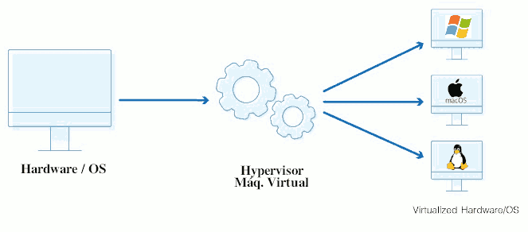
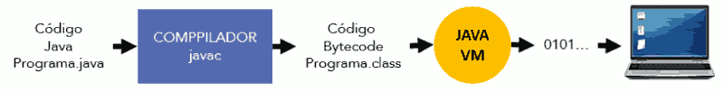
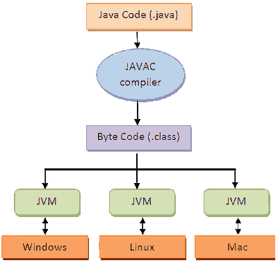

Una máquina virtual es un tipo especial de software cuya misión es separar el funcionamiento del ordenador de los componentes hardware instalados.
Las máquinas virtuales requieren de grandes recursos por lo que hay que tener cuidado y ejecutarlas en ordenadores capaces de soportar los procesos que requieren dichas máquinas para que no nos funcionen lentas o se colapsen. Se clasifican en dos categorías:
- Máquinas virtuales de sistema. Nos permiten virtualizar máquinas con distintos sistemas operativos en cada una. Un ejemplo son los programas VMware Workstation o Virtual Box que podremos usar para probar nuevos sistemas operativos o ejecutar programas.
- Máquinas virtuales de proceso. Se ejecutan como un proceso normal dentro de un SO y solo soporta un proceso. Se inician cuando lanzamos el proceso y se detienen cuando este finaliza. El objetivo es proporcionar un entorno de ejecución independiente del hardware y del sistema operativo y permitir que el programa sea ejecutado de la misma forma en cualquier plataforma. Ejemplo de ello es la máquina virtual de Java.
Las funciones principales de una máquina virtual son las siguientes:
- Conseguir que las aplicaciones sean portables.
- Reservar memoria para los objetos que se crean y liberar la memoria no utilizada.
- Comunicarse con el sistema donde se instala la aplicación (huésped), para el control de los dispositivos hardware implicados en los procesos.
- Cumplimiento de las normas de seguridad de las aplicaciones.
CARACTERÍSTICAS DE LA MÁQUINA VIRTUAL
- Cuando el código fuente se compila se obtiene código objeto (bytecode, código intermedio).
- Para ejecutarlo en cualquier máquina se requiere tener independencia respecto al hardware concreto que se vaya a utilizar.
- Para ello, la máquina virtual aísla la aplicación de los detalles físicos del equipo en cuestión.
- Funciona como una capa de software de bajo nivel y actúa como puente entre el bytecode de la aplicación y los dispositivos físicos del sistema.
- La Máquina Virtual verifica todo el bytecode antes de ejecutarlo.
- La Máquina Virtual protege direcciones de memoria.
La máquina virtual actúa de puente entre la aplicación y el hardware concreto del equipo donde se instale.

Máquina Virtual Java
Los programas que se compilan en lenguaje Java son capaces de funcionar en cualquier plataforma (UNIX, Mac, Windows, Solaris, etc.). Esto se debe a que el código no lo ejecuta el procesador del ordenador sino la propia Máquina Virtual de Java (JVM).

El funcionamiento básico de la máquina virtual es el siguiente:
- El código fuente estará escrito en archivos de texto planos con la extensión .java
- El compilador javac generará uno o varios archivos siempre que no se produzcan errores y tendrán la extensión .class
- Este fichero .class contendrá un lenguaje intermedio entre el ordenador y el SO y se llamará bytecode.
- La Java VM coge y traduce el bytecode en código binario para que el procesador de nuestro ordenador sea capaz de reconocerlo.
Los ficheros .class podrán ser ejecutados en múltiples plataformas.
Entre las tareas que puede realizar la máquina virtual Java pueden estar:
- La reserva de espacio para objetos creados y liberar aquella memoria que no se usa.
- Comunicación con el SO en el que se ejecuta la aplicación para varias funciones.
- Observar que se cumplen las normas de seguridad para las aplicaciones Java.
Una de las desventajas de usar este tipo de lenguajes que se basan en una máquina virtual puede ser que son más lentos que los lenguajes ya compilados, debido a la capa intermedia.